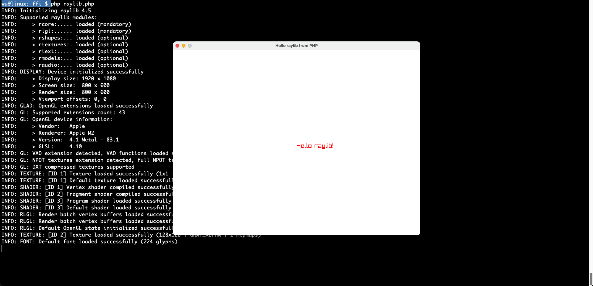

一门语言写的代码跟另一门语言交互一直是我很感兴趣的事情，既想用着让自己舒服的语言，又想使用其它语言在特定领域中强大的生态。当然通过网络接口来交互是最简单的方式，但需要写很多额外的代码。FFI(Foreign Function Interface)是用于与其它语言交互的接口，可以将其它语言的接口内嵌到本语言中，用起来就方便得多。
FFI是PHP核心代码的一部分，所以不需要担心后期没有人维护，放心大胆地使用吧。官方文档中提到访问FFI数据结构比访问原生PHP数组和对象慢很多（大约 2 倍）。因此使用FFI扩展来提高速度没有意义；减少内存消耗可能有意义。不过我使用FFI就是为了使用其它语言的生态，这个倒无所谓了。
FFI允许我们在PHP中加载共享库（.DLL或.so）、调用C函数、访问C数据结构，而无需深入了解Zend扩展API，也无需学习第三方“中间”语言。
简单的 FFI 示例
初次接触，先体验一下FFI的神奇之处吧。先自己写个简单的C代码，为了验证自己的想法，特意分成两个函数：
// add10.c
int actual_add10(int num) {
return num + 10;
}
int add10(int num) {
return actual_add10(num);
}
将其编译为共享库：
$ gcc --shared -o libadd10.so add10.c
下面就可以使用PHP调用add10函数了：
<?php
// add10.php
$ffi = FFI::cdef(
'int add10(int a);',
'libadd10.so'
);
$result = $ffi->add10(5);
echo $result, "\n";
执行结果如下：
$ php add10.php
15
FFI通过ABI(Application Binary Interface)将两门语言集成到一起。ABI定义了编译的C代码的二进制调用约定和数据结构，C-ABI约定也得到了其它非C语言的支持，如Rust，所以理论上如果一门语言支持C-ABI，那么PHP都可以通过FFI调用它写的库。
通过FFI可以做很多有意思的事，它令PHP几乎可以编写任何想要的代码，例如用PHP写桌面程序，绝大部分时间都不再需要跟复杂的Zend虚拟机打交道。
FFI + raylib 写图形程序
以下是一个通过FFI用PHP在Mac OS上做的图形程序，使用的是4.5.0版本的libraylib.dylib，是不是感觉像打开了新世界？纯粹的PHP也能写图形程序了。
<?php
// raylib.php
// 定义C语言库的结构体和函数
$ffi = FFI::cdef("
typedef struct Color {
unsigned char r, g, b, a;
} Color;
void InitWindow(int width, int height, const char* title);
int WindowShouldClose(void);
void ClearBackground(Color color);
void BeginDrawing(void);
void DrawText(const char* text, int x, int y, int fontSize, Color color);
void EndDrawing(void);
void CloseWindow(void);
", "/opt/homebrew/Cellar/raylib/4.5.0/lib/libraylib.dylib"); // 替换为你要使用的raylib库文件的路径
// 创建窗口并绘制文本
$ffi->InitWindow(800, 600, "Hello raylib from PHP");
$white = $ffi->new('Color');
$white->r = 255;
$white->g = 255;
$white->b = 255;
$white->a = 255;
$red = $ffi->new('Color');
$red->r = 255;
$red->g = 0;
$red->b = 0;
$red->a = 255;
while (!$ffi->WindowShouldClose()) {
$ffi->ClearBackground($white);
$ffi->BeginDrawing();
$ffi->DrawText("Hello raylib!", 400, 300, 20, $red);
$ffi->EndDrawing();
}
$ffi->CloseWindow();
运行：
$ php raylib.php
效果图如下：

这么好玩的FFI，赶紧玩起来吧。